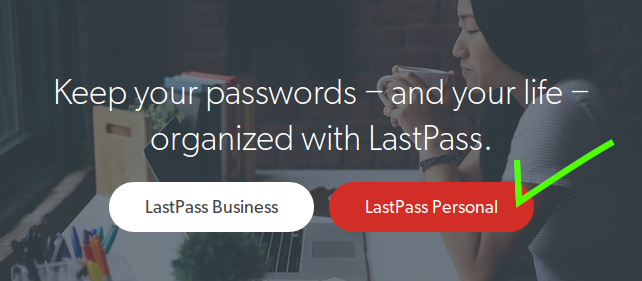
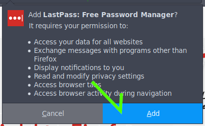
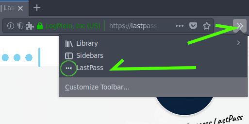
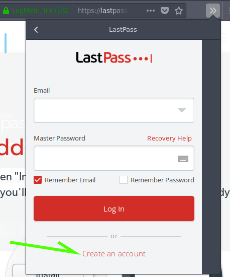
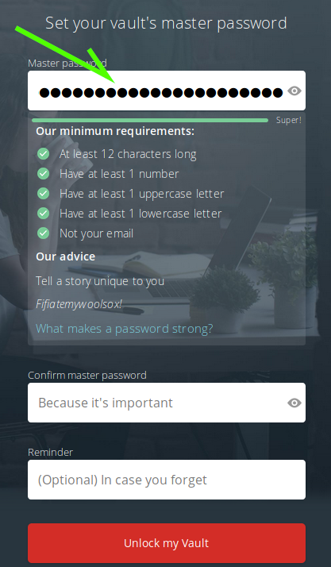
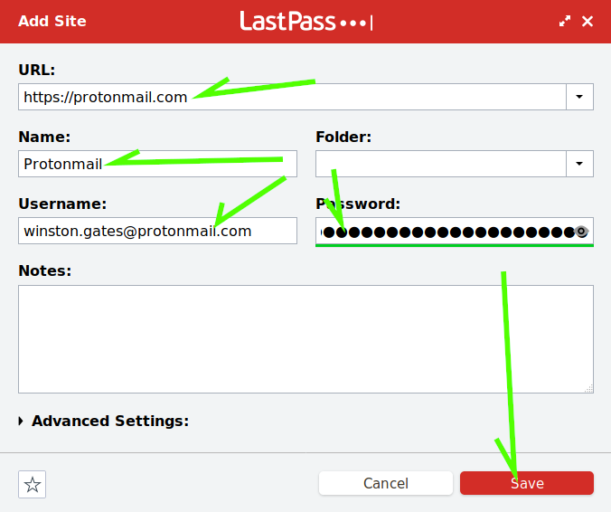

LastPass is a browser extension and phone application that will generate secure passphrases for you, and fill them in when you go to a site for which LastPass has your credentials.
We'll start off by heading over to the LastPass site, where if you've not already installed the add on you'll be offered to do so.
Click the button to get LastPass installed in your browser as an add on.

Your browser is likely going to attempt to stop LastPass from adding itself to the browser's add on list. We'll want to Allow this time.
Now you should get a dialogue warning of how many things this application is able to see. LastPass has been vetted by many security professionals, we can choos Add here.

LastPass should have installed itself into the browser we should now have an icon to the right of our addressbar that looks like three dots with a line to the right of them. The icon may be hiding under the add ons drop down menu as it was on mine.
Click the LastPass Icon

This opens a dialogue window, at the bottom you'll see a button to Create a LastPass account. Click that.

Fill in the burner email account that we created yesterday here (you do remember your passphrase, right?) and click the Create Account button to continue.
Time to make a good passphrase! Make sure that this one is really strong, not only is it protecting your everything, but when we're done here it will be the only passphrase you need to remember.
NOTE If you forget this passphrase, you can never get your data back. It's actually encrypted, that's a one way road if you forget the passphrase.

Input your new passphrase again so that LastPass can confirm that you didn't have a type the first time.
Reminder I never fill these in, when the Adobe database leaked it was the reminders (which were not encrypted) that lead to the ability to crack most of Adobe's passwords.
When you're sure you've got a good passphrase you can remember forever, click Unlock my Vault.
Success! You now have a passphrase manager. Click the Add Site button and let's go add our burner email account to LastPass.
A dialogue should open showing where we can fill in the information necessary to log into ProtonMail. When you're done here hit Save, then navigate back to ProtonMail and LastPass should automatically fill in your credentials!

Now that we have a LastPass account set up, let's return to that question from the start of the exercise, how is our LastPass account still vulnerable? How can we fix it?